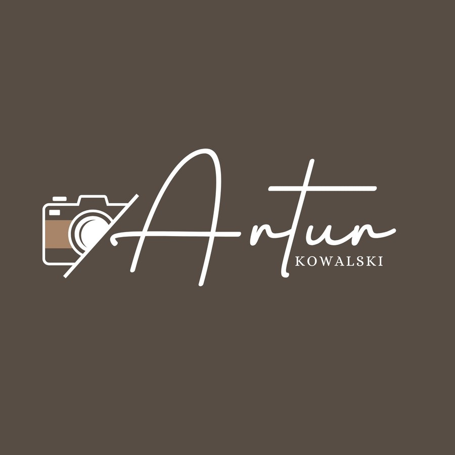

Artur Kowalski
Fotograf
Fotografia to dla mnie coś więcej niż praca — to sposób na zatrzymanie najpiękniejszych chwil.
Zapisz kontakt (vCard) Dodaj do kontaktówZeskanuj mnie i zapisz kontakt

Fotograf
Fotografia to dla mnie coś więcej niż praca — to sposób na zatrzymanie najpiękniejszych chwil.
Zapisz kontakt (vCard) Dodaj do kontaktówZeskanuj mnie i zapisz kontakt